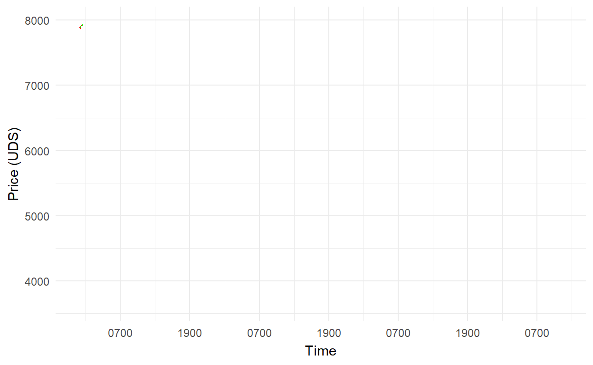
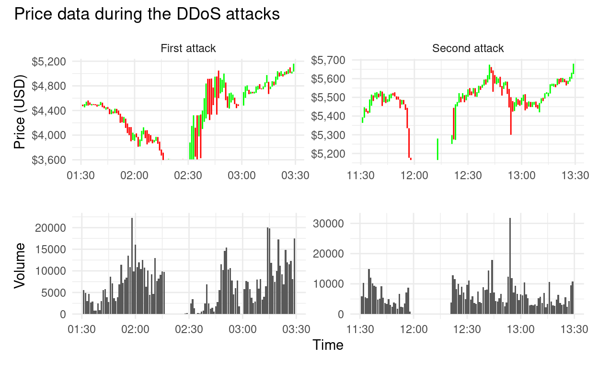

Bitcoin recently had a significant sell off, crashing 50% in a matter of hours. This undoubtly was due to the uncertainty in markets surrounding the economic impacts of COVID-19, and the consequent reduction in liquidity faced by many different assets. The volatile price action does however make for an interesting case study which this post will explore.
Bitmex is one of the largest cryptocurrency exchanges where Bitcoin is traded. BitMEX provides a great API that can be used to gather all kinds of data from the site regarding trades and orders, and even allows you to build your own trading bot if you’re feeling confident in your programming ability to make a profitable algorithm… However this post will simply collect data from the most recent crash in price and explore what happened using some great R packages including tidyqaunt (Dancho and Vaughan 2020) and gganimate (Pedersen and Robinson 2020) as well as the usual suspects in the tidyverse.
To obtain the necessary data, I first defined a quick function based on the information found on the BitMEX API explorer page (https://www.bitmex.com/api/explorer). This function barely scratches the surface at the possible requests available - but does get the data needed.
xbt_reader <- function(symbol = "XBT",
timeframe = "1d",
count = "1000",
starttime = "",
reverse = 'false'){
base <- "https://www.bitmex.com/api/v1/trade/bucketed?"
symbol = symbol
timeframe = timeframe
count = count
starttime = starttime
url <- paste0(base,
'binSize=', timeframe,
'&partial=false&symbol=', symbol,
'&count=', count,
'&reverse=', reverse,
'&startTime=', starttime)
result <- tibble(data = content(GET(url), "parsed")) %>%
unnest_wider(data)
}Next, I used this function to get the bucketed 5 minute trade data starting from the day before the crash.
xbt <- xbt_reader(timeframe = "5m", starttime = "2020-03-11") %>%
mutate(timestamp = as_datetime(timestamp))The price action can now be plotted using a combination of tidyqaunt and gganimate.
xbt %>%
mutate(label = "help") %>%
ggplot(aes(x = timestamp, y = close)) +
geom_candlestick(aes(open = open, high = high, low = low, close= close),
fill_up = "green",
fill_down = "red",
colour_up = "green",
colour_down = "red") +
scale_x_datetime(date_breaks = "12 hour", date_labels = "%H%M") +
scale_y_continuous(labels = scales::dollar) +
labs(y = "Price (USD)",
x = "Time") +
transition_time(timestamp) +
shadow_mark() +
theme_minimal()
As can be seen, this was a dramatic sell of with price dropping from almost 8000 USD to the low 3000 USD mark within a matter of hours, before recovery slightly to around the 5000 USD level.
What makes this price action all the more intriguing is the reported DDoS attacks suffered by Bitmex on the 13th March. Bitmex reported two attacks, taking place at 02:16 UTC and 12:56 UTC. The first attack also happened to coincide with the lowest price during the drop which has caused some suspicion giving the timing of the attacks… However, speculation aside, these attacks can be clearly visualised using the trade data.
I’ve adjusted the time interval to the lowest resolution possible (1 minute) to clearly see the effect of the DDoS attacks.
xbt_lower <- xbt_reader(timeframe = "1m", starttime = "2020-03-13") %>%
mutate(timestamp = as_datetime(timestamp)) %>%
filter(timestamp > "2020-03-13 11:30:00" & timestamp < "2020-03-13 13:30:00" |
timestamp > "2020-03-13 01:30:00" & timestamp < "2020-03-13 03:30:00") %>%
mutate(ddos = case_when(timestamp > "2020-03-13 01:30:00" & timestamp < "2020-03-13 03:30:00" ~ "First attack",
timestamp > "2020-03-13 11:30:00" & timestamp < "2020-03-13 13:30:00" ~ "Second attack",
))
p1 <- xbt_lower %>%
ggplot(aes(x = timestamp, y = close)) +
geom_candlestick(aes(open = open, high = high, low = low, close= close),
fill_up = "green",
fill_down = "red",
colour_up = "green",
colour_down = "red") +
facet_wrap(~ddos, scales = "free") +
scale_y_continuous(labels = scales::dollar)+
labs(x = "", y = "Price (USD)") +
theme_minimal()
p2 <- xbt_lower %>%
ggplot(aes(timestamp, volume/1000)) +
geom_col() +
facet_wrap(~ddos, scales = "free") +
theme_minimal() +
labs(x = "Time", y = "Volume") +
theme(
strip.background = element_blank(),
strip.text.x = element_blank()
)
p1 / p2 +
plot_annotation(title = "Price data during the DDoS attacks")
The effect of each DDoS is clearly visible from the price data, leaving large gaps for approximately 15 minutes where very few to no trades were placed. Immediately following each attack was a period of extreme volatility, before price was able to stabilise to some degree.
These conditions would have expectationally difficult for many traders, although not all together unpredictable given the highly volatile nature of Bitcoin and the risk that comes with it…!
There are a several other avenues that could be interesting to explore here, such as visualising the order book liquidity during the crash compared to a more “stable” period of time, however I may save that for a follow-up post. I have also been playing with the Bitmex websocket connection which streams real time data from the exchange - I think a shiny app would be really cool to visualise this so may try something there as well.
Thanks for reading!
Dancho, Matt, and Davis Vaughan. 2020. Tidyquant: Tidy Quantitative Financial Analysis. https://CRAN.R-project.org/package=tidyquant.
Pedersen, Thomas Lin, and David Robinson. 2020. Gganimate: A Grammar of Animated Graphics. https://CRAN.R-project.org/package=gganimate.